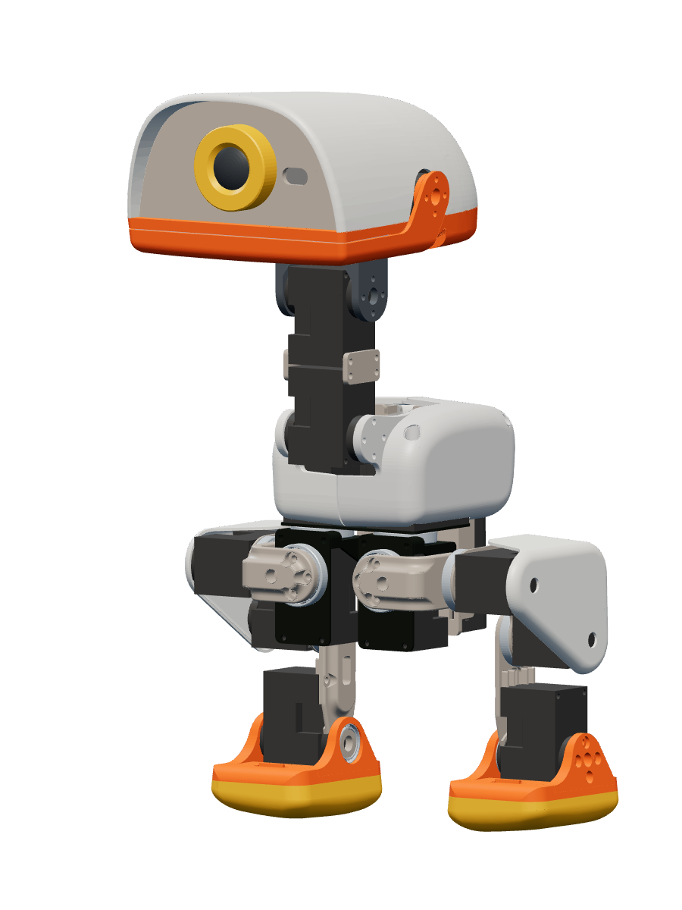
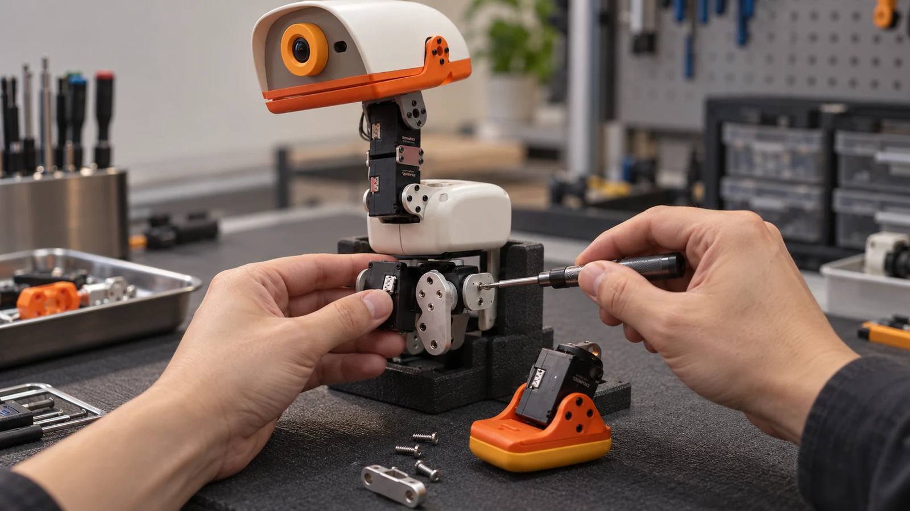

选择一个真实部件
结构树与三维拾取联动，保留部件身份和来源构型。
将设备资料、三维部件、装配关系和来源证据组织到同一个工作台，从知识构建走向交互装配与模型研发。
同一设备 · 同一知识版本 · 连贯的工作上下文
设备、知识版本与来源保持关联。
构建知识、探索装配与组织模型研发，
都从同一个工作区出发。
从原始资料建立设备知识，固定来源、部件关系和发布版本。构建通过 CLI 完成，工作台呈现已登记的真实产物。
在三维空间中查看兼容关系，连续连接与拆分部件，保留装配方案。参考还原与工程验证分别记录。
围绕设备组织训练语料、实验、模型产物与评估的目标位置。当前页面展示能力规划，数据集发布、训练和推理执行尚待接入。
模型中的一个部件，连接到具体的接口、
装配关系和来源位置。
知道结论，也能检查结论从何而来。

拖拽旋转 · 方向键查看 · 展开仅用于浏览
结构树与三维拾取联动，保留部件身份和来源构型。
区分本件几何、功能接口、原装配关系与兼容候选。
查看支持记录、未决条件和来源位置，按需追溯原件。
将知识定位到 XML、说明和相关原始资料中的具体位置。
保留来源设计与原装关系。几何观测、装配操作资格和工程验证状态分别表达。
在同一个工坊里选择、连接与拆开部件。
记录每一步，随时撤销，
也可以按来源构型还原。
查看候选、接口和当前条件，再选择具体连接方式。
连续连接与拆分，撤销重做，独立保存不同装配方案。
自动还原保留原装关系；参考演示与工程验证分别记录。
原装接触重叠保留测量记录，不单凭刚性网格交集否定装配或改动设计。当前能力不等于动力学、承载或连续装入路径的完备认证。
先建立可检查的设备上下文，
再围绕具体任务扩展用途。
检查部件、接口与来源关系，在独立方案中探索连接、拆分和参考还原。
查看装配操作围绕真实模型讲解结构和接口，用操作演示与来源依据帮助理解设备。
理解设备结构组织语料、模型和评估的上下文。数据集发布、训练及推理执行服务仍待接入。
查看 Compile 状态任务执行、现场交互与受控实验，
分别保留其设备、来源和演示性质。
演示身份与复检两路记录如何汇合。缺少复检记录时保持当前步骤，补充教学记录后再推进。
播放示例，观察任务状态如何根据记录推进。
这是任务条件核验的教学示例，不向真实设备提交操作，也不代表当前工作台已接入现场执行服务。
下方 Microduck 场景使用生成安装示意与教学标记；机械臂录像保留原始案例归属。

将当前画面与设备、关节和任务绑定，确认操作对象。
已有机械臂演示：部件高亮、步骤提示与双手装配。
以上为历史机械臂实验结果，不能外推为当前 Microduck 的实机安装、识别复检或模型训练效果。
Node.js 22.12+、Python 3.11+、Git LFS。
按项目使用指南构建或还原 Microduck 示例。
浏览部件与来源，进入独立三维装配方案。